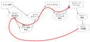
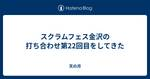
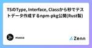
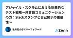
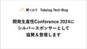
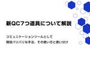
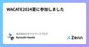
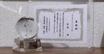
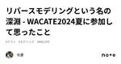

直近1週間の更新
7/2 (火)
最新！この1週間でもっとも読まれた記事｜2024.6.25~7.1 PV数ランキングTOP10 SHIFT Group 技術ブログ
こんにちは！ いつも当社の技術ブログをご愛読いただきありがとうございます。 SHIFTGroup技術ブログ担当のノザワです。 梅雨時期のいや～な天気でも、時折見える晴れ間や、雨上がりの大きな虹に癒されますよね。夏の果物も美味しい季節！という楽しみも。 さて今週は、最新のPV数ランキングTOP10記事と、その中から特に注目すべき2つの記事をピックアップしてご紹介します。技術の最前線で活躍する皆さんにとって、きっと役立つ情報が満載です。それでは、早速ランキングを見ていきましょう！ ★参考｜これまでのランキングまとめ 続きをみる
2時間前

「リバースモデリングを行ってテスト設計する」は、単純にリバースしてないと気付いた話 #WACATE ブロッコリーのブログ
はじめに 先日、WACATE 2024 夏というワークショップを開催しました。私はWACATE実行委員長として運営に携わり、準備を行ってきました。 WACATE 2024 夏の開催内容およびWACATEという団体について詳しくは、以下のページをご覧ください。 wacate.jp WACATE 2024 夏では「テストケースには、必ず作った人の意図が存在する」というサブタイトルを付け、テスト実装からテスト分析へとテストプロセスをさかのぼる（＝リバースする）過程を体験してもらいました。 ワークショップを作成するにあたり、テストプロセスについて今までより深く考えられた（気がする）ので、本記事で言語化…
4時間前
7/1 (月)

モデルトリック LLMにおけるQA LLMにおけるQAで抑えておきたいキーワード Zennの「QA」のフィード
モデルトリックとは LLM（Large Language Models）における「モデルトリック」は、モデルが意図的にプログラムされた動作や制約を回避したり、予期しない方法で動作することを指します。モデルトリックは、品質保証（QA）およびセキュリティの観点からいくつかのリスクをもたらします。以下に詳しく説明します。 QA（品質保証）の観点からのモデルトリック 不安定な出力 モデルトリックによって、モデルは不安定な出力を生成する可能性があります。これは、一貫性のある品質の維持が困難になるため、ユーザー体験に悪影響を与える可能性があります。 テストカバレッジの欠如 モデ...
18時間前
QAのリレー記事をZennでやるぞ〜！ Zennの「QA」のフィード
はじめに みなさん、お初にお目にかかります。 株式会社ビットキーでQAをしているやきょ(@yakyo_824)と申します。 今回はじめてZennで記事を投稿するにあたり、ちょっとした企画をしました。 その名もBitkey Software QA Advent Calendar 2024 Summer！ ......長い。長いがゆえに記事タイトルではリレー記事と簡略化しました。 本記事はその集大成となるようにデザインしながらその説明を行いたいと思います。 また本企画の初回記事となるため、ビットキーとそのSoftware QAチームについて軽く説明します。 もしご興味を持った方がいればぜ...
1日前
2024年6月のふりかえり 天の月
6月が終わったのでいつも通りふりかえりをしていきます。 月のふりかえり 仕事 社外活動/自己研鑽 プライベート 一年でやりたいことに対してのふりかえり 翻訳 登壇(プロポーザル) コミュニティを立ち上げる 続けていることに関して何かしらの単位を変える 1年間運動を継続する 国際カンファレンスに参加 月のふりかえり 仕事 今月から新たなPJが始まり、なおかつどちらも自分にとってかなりチャレンジングなプロジェクトだったため、かなり忙しい中楽しく仕事をしていました。今月の記録を見てみると、殆どの時間が仕事をしているか仕事のために直接的に役立つ情報収集の時間でした。 パブリックな場ということもあり、あ…
2日前
6/30 (日)
スクラムフェス三河にプロポーザルを出した 天の月
タイトルの通り、スクラムフェス三河にプロポーザルを出したのでその告知です。(スクラムフェス仙台と同じ締切日ということで告知が続いてしまいすみません) プロポーザル 概要 1本目 2本目 3本目 プロポーザルを出した理由 1本目 2本目 3本目 今回チャレンジしたいこと 1本目 2本目 3本目 おわりに プロポーザル confengine.com confengine.com confengine.com ※以降、上から順に1本目. 2本目, 3本目と表記していきます。 概要 1本目 本セッションでは、ソフトウェア工学に新たなページを作ろうとしている47機関というチームにjoinして約2年間が経…
2日前
開発の高スピードと高品質を支えるテストアプローチについて講演 1千里霧中
1千里霧中
先日、開発生産性 Conference 2024のSpecial Sessionにて、「高品質と高スピードを両立させるテストアプローチ」と題して講演をさせていただきました。https://speakerdeck.com/goyoki/test-approach-that-improves-quality-and-agility-together speakerdeck.com2000人弱の参加者で緊張する登壇でしたが、準備を通して最近の経験や学びを体系的に整理でき、良い機会になりました。 声をかけていただいた運営の方々、参加者の方々、大変ありがとうございました。
2日前
ソフトウェアの制約を解き放つ: TOCとDDDによる革新的アプローチ〜アジャイル・スクラム・DevOpsとDDD・TOCの統合〜 Zennの「QA」のフィード
Podcast https://podcasters.spotify.com/pod/show/-qa-in-devops/episodes/TOCDDDDevOpsDDDTOC-e2klfm9 YouTube 概要 このエピソードでは、アジャイル、スクラム、DevOpsの概念とそれらがドメイン駆動設計（DDD）および制約理論（TOC）とどのように結びつくかを探ります。無駄をなくし、効率化を図るためには、QAやエンジニアがTOCやDDDを学ぶことが有益である理由を解説します。アジャイル環境においては、スプリントごとにルールが変わることがあり、変化に強いアプローチが求められます...
2日前
JetBrains AquaでPlaywriteのE2Eテストを書いてみた 1Zennの「Test」のフィード
はじめに 「Aqua」は、JetBrains社が開発したテスト自動化に特化したIDE（統合開発環境）です。 テストコード作成やテスト実行が効率的におこなえるよう、以下機能などが備わっています。 E2Eフレームワーク: Selenium、Playwright、Cypressをサポート。 コーディング支援: Java、Kotlin、Python、JavaScript、TypeScriptなどの言語対応。 Webインスペクタ: テスト対象のロケーターの検証や、CSSやXPathの指定を補完。 HTTPクライアント: テスト対象のAPIを呼び出すためのHTTPクライアントを内蔵。 ...
2日前
Test Zennの「Test」のフィード
テスト てすと テストです https://www.docker.com/ja-jp/products/docker-desktop/ function test(string arg) : void { // 何らかの // 処理を // 書く }
2日前
6/29 (土)

スクラムフェス金沢の打ち合わせ第22回目をしてきた 天の月
今日もスクフェス金沢の打ち合わせをしていったので、話した内容を書いていきます。 今日も残作業を粛々と整理していきました。 www.scrumfestkanazawa.org 香盤表作成 全体を通した感想 香盤表作成 Day2の香盤表を作っていきました。香盤表を作りながら、以下のような話をしました。 Day2は会場が9時から使えるようになるが、9:20-オンラインで開催できるようにする必要があるので時間的には結構ばたばたな気がする 受付はまつさきさんとaki.mがいるが、aki.mは午前にセッションがあるのでえわさんに変わってもらう オンライン担当は特別つけなくていい OSTの説明は及部さんが作…
3日前

TSのType, Interface, Classから秒でテストデータ作成するnpm-pkg公開(Rust製) 3Zennの「Test」のフィード
はじめまして🙋 タイトルの通りTypescriptのType, Interface, Classから秒でテストデータ作成するツールを公開しました👏👏👏 boostestと言います🚀🚀🚀 https://github.com/MasatoDev/boostest https://www.npmjs.com/package/boostest boostestとは？ npmでインストールするコマンドです。 日本語のREADMEには利用方法の動画もあります✨✨ ざっくりいうと下記のようなツールでして... typescriptのtypeやinterface, classから瞬時にテ...
3日前

アジャイル・スクラムにおける効果的なテスト戦略〜非言語コミュニケーションの力：Slackスタンプと自己開示の重要性〜 Zennの「QA」のフィード
Podcast YouTube https://youtu.be/9dH4fIp5RHk
3日前
Go の ogen でテストを実装する３つのパターン Zennの「Test」のフィード
はじめに ogen 関連シリーズ第３弾です。 シリーズ化するとともに ogen がどんどん好きになっています。 第１弾 https://zenn.dev/otakakot/articles/43653194611d42 第２弾 https://zenn.dev/otakakot/articles/8f15c1bc906e4e 今回は ogen でテストを実装する際に使える３つのパターンをご紹介します。 ogen https://ogen.dev/ OpenAPI からコードを自動生成することができ、以下のような特徴があります。 生成されたコードで refrect や inter...
3日前
6/28 (金)
スクラムフェス仙台にプロポーザルを出した 天の月
www.scrumfestsendai.org スクラムフェス仙台にプロポーザルを出したので、今日はその告知です。 プロポーザル プロポーザルを出したきっかけ 今回チャレンジしたいこと おわりに プロポーザル confengine.com ■ 概要 本セッションでは、令和の学習指導要領の内容を紐解くことで、スクラムなどの知識を職場やコミュニティで広げようとしている方がより効果的に学びを伝えられるような場の形成方法や、個々人がそれぞれのペースで学びを促進するための勉強会の設計をお伝えします。 ■ 詳細 学習指導要領は、文部科学省が作成する日本の小中高等学校における教育内容や目標を定めたガイドライ…
4日前
JSTQBシラバス V4.0.J01 から色々キャッチアップ〜テストレベルとテストタイプ〜 ごまずん
はじめに 私はJSTQBのAL保有マンですが、FLを取ったのは2018年ですので、真面目にリスキリングしようと思いました。 この記事の公開は2024年6月で、試験は2024年10月以降らしい。 まだ慌てる時間じゃないということで、気ままにシラバスを見ていこうと思います。 また、おそらく私の記事ではISTQBの原文は参照しません。 過去の経験からあんまり意味がないとわかっているからです。 ex.日本語シラバスでよくわからんところはどうせ原文でもよくわからない。 続きをみる
4日前
[Laravel] Factoryインスタンスをrawメソッドでarray化する Zennの「Test」のフィード
v11.13.0で確認 概要 src/Illuminate/Database/Eloquent/Factories/Factory.phpのrawメソッドを使うことで、Factoryインスタンスをarrayに変換できる tinker環境での実行結果 > User::factory()->raw() = [ "name" => "Eriberto VonRueden", "email" => "ewald.rohan@example.net", "email_verified_at" => Illuminate\Support\...
4日前
カオスエンジニアリング DevOpsとマイクロサービス時代のQA キーワード解説 Zennの「QA」のフィード
カオスエンジニアリング カオスエンジニアリング（Chaos Engineering）は、システムの堅牢性と回復力を向上させるために、意図的に障害や異常を発生させ、そのシステムの挙動を観察・評価する手法です。この手法は、Netflixが開発した「Chaos Monkey」というツールに由来しており、実際の運用環境でランダムな障害を発生させることで、システムの弱点を発見し、改善するために使用されます。以下では、カオスエンジニアリングがQA、DevOps、およびマイクロサービスの文脈でどのように重要であるかを説明します。 https://youtube.com/shorts/UsjDpG4...
4日前
WACATE2024 夏に参加しました！ Zennの「QA」のフィード
WACATE2024 夏に参加しました！ WACATE2024 夏 〜テストケースには、必ず作った人の意図が存在する〜に参加しました。 今回、初めて合宿型のエンジニアイベントに参加し、非常に実りのある体験をさせていただきました。 自分が何を考えて何を感じたのか整理するとともに、どなたかの目に触れて少しでもWACATEの認知度が高まればいいなあと思いこちらの記事を書きました。 自分がこのイベントで感じた楽しさが伝わるよう、ゆるめに書きます。 自己紹介 2024年で社会人6年目になります。今年4月にSIerの開発エンジニアから品質コンサルティングサービスのQAエンジニアに転職しました...
4日前

開発生産性Conference 2024にシルバースポンサーとして協賛＆登壇します 9
QA - Tabelog Tech Blog
おはようございます！ (開発生産性Conference 2024)の現地、虎ノ門ヒルズから品質管理室の荻野 (@kokotatata)がお届けします。 食べログは2024年6月28~29日に開催される開発生産性カンファレンスへと協賛し、ブース出展とスポンサーセッション枠での登壇をします。 ブースでは、Four keysについてのお悩みをみなさまとディスカッションをするためのボードを用意しています。 また、キーキャップ、ステッカー、靴下などのノベルティをご用意しておりますので、みなさまお気軽にお立ち寄りください。 明日(6月29日)の11:20-12:00にホール5-B会場では、品質管理室の菅原…
4日前
ふるさと納税を福利厚生や組織活性化に活用できる２つの秘策 1SHIFT Group 技術ブログ
こんにちは、SHIFT DAAE（ダーエ）戦略部の荒木です。同部にてマーケティングアドバイザー、ふるさと納税サービス「まん福」の統括担当を経て、現在は地方創生、 自治体向けの新規企画などを担当しています。 この記事はこんな方におすすめ 続きをみる
4日前

Ranorex DesignWise Ranorex Blog - UIテスト自動化ツール Ranorex
高品質な自動テストを構築することは、リリース前にソフトウェアを最適化し、洗練されたものにするために非常に重要です。しかし、プログラマーにとって、できるだけ多くのバグを検出するために多くのテストを構築することは、時間のかか […] The post Ranorex DesignWise first appeared on UIテスト自動化ツール Ranorex.
4日前

2024.06.28ナレッジNEW 新QC7つ道具について解説 -コミュニケーションツールとして現役バリバリな手法、その使い方と使い分け- QC7つ道具 新QC7つ道具 QC 品質管理... メディア | HQW!
2024.06.28 ナレッジ NEW 新QC7つ道具について解説 -コミュニケーションツールとして現役バリバリな手法、その使い方と使い分け- QC7つ道具 新QC7つ道具 QC 品質管理 SQC TQC TQM ナレッジ
4日前
6/27 (木)
スクラムフェス三河のプロポーザルを眺めたり、書いてみたりする会に参加してきた 天の月
distributed-agile-team.connpass.com こちらのイベントに参加してきたので、会の様子と感想を書いていこうと思います。(9:30くらいから遅れて参加しました) やってやろうじゃないかメカアジャイル！老舗製造業がプロダクションプリンターで取り組んだハードウェアアジャイルの実例を紹介します スクフェスに参加したら越境の一歩を踏み出せた話、そして小さな取り組みでも得られたもの（仮） インプットした情報をいい話だっただけで終わらせない！具現化するためにやったこと あまり語られないテスラの組織の秘密、そっと教えます。 グイグイ系QAエンジニアリングマネージャーの仕事 全体を…
5日前
JSTQBシラバス V4.0.J01 から色々キャッチアップ〜コンテキストに応じたソフトウェア開発ライフサイクルでのテスト part2〜 ごまずん
はじめに 私はJSTQBのAL保有マンですが、FLを取ったのは2018年ですので、真面目にリスキリングしようと思いました。 この記事の公開は2024年6月で、試験は2024年10月以降らしい。 まだ慌てる時間じゃないということで、気ままにシラバスを見ていこうと思います。 また、おそらく私の記事ではISTQBの原文は参照しません。 過去の経験からあんまり意味がないとわかっているからです。 ex.日本語シラバスでよくわからんところはどうせ原文でもよくわからない。 続きをみる
5日前
心理的安全性 DevOpsとマイクロサービス時代のQA キーワード解説 Zennの「QA」のフィード
心理的安全性とは 心理的安全性（Psychological Safety）は、チームメンバーが自分の意見やアイデア、懸念を自由に表現できる環境のことを指します。この概念は、エイミー・エドモンドソン（Amy Edmondson）によって提唱され、Googleの「Aristotleプロジェクト」によって広く知られるようになりました。心理的安全性が高いチームでは、メンバーがミスを恐れずに発言できるため、創造性や問題解決能力が向上し、全体的なパフォーマンスが改善されます。以下では、心理的安全性がQA、DevOps、およびマイクロサービスの文脈においてどのように重要であるかを説明します。 ht...
5日前

WACATE2024夏に参加しました Zennの「QA」のフィード
はじめに みなさんこんにちは！ 夏ですね〜！暑いですね〜！ 今回、6/22・23の2日間に渡って行われた WACATEという勉強会に参加したので、レポートを書こうと思います。 ゆるゆると書いていくので、ぜひ通勤時間の暇つぶしにでもお読み頂けると嬉しいです。 https://wacate.jp/ WACATEってなに？ WACATEとは、若手テストエンジニア向けのワークショップです！ Workshop for Accelerating CApable Testing Engineers：内に秘めた可能性を持つテストエンジニアたちを加速させるためのワークショップ 自分は最近知りま...
5日前
2024/6/26（水）、「人生が整うマウンティング大全」読書会に参加しました。 toshimana's diary
はじめに 「南町通りイカ研究所 デベロッパー部」の活動として開催された「人生が整うマウンティング大全」読書会に参加しました。minamimachi.connpass.com人生が整うマウンティング大全作者:マウンティングポリス技術評論社Amazon正直なところ、「ネタ本」だと思いワイガヤできればいいや、くらいに思っての会でしたが、やってみると事前の想定以上に役に立つ考えがあって面白かったです。マウンティング、という日常で避けて通れないネタであり参加者の体験談も豊富に出てきて、とても面白い会でした。想定よりも、人が集まって読書会するのに向いている本だと思いました。 ABD(Active Book…
6日前
6/26 (水)
オブジェクト指向のこころを読む会 Vol22に参加してきた 天の月
yr-camp.connpass.com こちらのイベントに参加してきたので、会の様子と感想を書いていこうと思います。 会の概要 会の様子 20章応用問題1 20章応用問題2 20章応用問題3 20章あなたの意見 21章応用問題 21章あなたの意見1 21章あなたの意見2 会全体を通した感想 会の概要 今日もタイトル通りオブジェクト指向のこころを読んで応用問題を解いていきました。 今日は20章と21章が対象で、応用問題を解いていきました。 会の様子 20章応用問題1 凝集性が低く、変更容易性も下がってしまうという話が出ていました。 また、コードを書くときに考えることも多くなってしまうのもデメリ…
6日前
生成AIはどうテストを変えるのか (AI Test Lab vol.1) SHIFT EVOLVE グループの新着イベント
開催日時: 2024/07/24 19:30 ～ 20:50<br />開催場所: オンライン<br /><br /><h2>Overview: TEST x AI Meetup</h2> <p>「人が作った要件に対して人が開発し、テストをする」</p> <p>従来は当たり前だと思っていたことが、生成AIの登場と活用の広がりとともに大きく変わりつつあります。生成AIにどこまで置き換えられるようになるのか、要件定義や開発の目線では多く語られるテーマですが、本シリーズではテストにフォーカスしてみました。初回となる今回はツールベンダー、テストベンダー、自動テストエンジニアのそれぞれの目線でテストとAI活用を掘り下げます。</p> <p>とどまるところを知らない生成AIの発展が、ソフトウェアテストをどう変えるのか、ご注目ください。</p> <h2>Contents</h2> <ol> <li>登壇者の取り組み紹介 10～15分程度ずつ</li> <li>パネルディスカッション 40～50分程度</li> </ol> <h2>Speakers</h2> <h3>伊藤 望 『E2Eテスト自動化プラ...
6日前
テスト技法:デシジョンテーブルってなんなの？〜ごまずんのオレオレデシジョンテーブル編〜 ごまずん
はじめに 本記事は私がデシジョンテーブルを書く時に大切にしていることや、オレオレのやり方について解説します。 続きをみる
6日前
Four Keys DevOpsとマイクロサービス時代のQA キーワード解説 Zennの「QA」のフィード
Four Keys "Four Keys"は、GoogleのDevOps Research and Assessment (DORA) チームが特定した、ソフトウェアデリバリとパフォーマンスの成功を示す4つの重要なメトリクスのことを指します。これらのメトリクスは、ソフトウェア開発およびデプロイメントのパフォーマンスを評価し、改善するための基準として広く使用されています。以下では、Four Keysの各メトリクスについて説明し、それらがQA、DevOps、およびマイクロサービスにおいてどのように活用されるかを詳述します。 https://youtube.com/shorts/z6HHN...
6日前
Vite+React+TypeScript環境にJestとReact Testing Libraryを導入する Zennの「Test」のフィード
1．Jest, React Testing Libraryの導入 npm install --save-dev jest ts-jest @types/jest jest-environment-jsdom@latest @testing-library/react@latest @testing-library/jest-dom@latest @testing-library/user-event@latest 2．package.jsonにjestコマンドを追加 "scripts": { # 略 "test": "jest" }, 3．con...
6日前
APIdogを利用して、QAエンジニアによるAPIテストを実施してみる Zennの「QA」のフィード
はじめに これまで、CUIベースやPostmanを利用したAPIテストを実施してきましたが、これまで結合テスト期間中に一人で実施することが多かったので、特にテストツールには拘りはありませんでした。 今回は複数人のチームでテストを実施すること、API実装と並行してAPIテストを実施するアジャイル開発を行うため、チームでテスト環境を共有できるツールが必要になりました。実験的なプロセスでもあったため、4人までならFree利用(かつクレジットカード登録不要)ができるAPIDogを利用することになりました。 APIDogとは APIDogは、API開発とテストを効率化するためのAPI開発プ...
6日前
6月26（水）27日（木）開催『ベリサーブ モビリティ イニシアティブ 2024』 ベリサーブ/VeriServe グループの新着イベント
開催日時: 2024/06/26 13:00 ～ 2024/06/27 15:45<br />開催場所: オンライン<br /><br /><h2>■Veriserve Mobility Initiative（ベリサーブ モビリティ イニシアティブ）について</h2> <hr> <p></p> Veriserve Mobility Initiative（以下 VMI）は、新時代の品質創造をリードするベリサーブがお届けする、MaaS/CASE時代の最先端技術カンファレンスです。 2021年より開催し、延べ3900名を超える方々にご参加いただいています。<p></p><p></p> <h2>■Veriserve Mobility Initiative 2024のテーマならびに開催趣旨</h2> <hr> <p></p> 本年度のテーマは『世界で打ち克つ「モビリティ品質」を考える－SDV時代の日本のモビリティ・イノベーションを加速する－』です。<br> 人やモノの移動を、安全に、スマートにするモビリティ新時代を迎え、その実現はSDVのみならず社会の新たなシステムを支えるソフトウェア開発にか...
6日前
2024.06.26ビジネスNEW 「技術の社会実装」に使命感、ウルシステムズ・漆原茂氏が目指すもの(後編) エンジニア 働き方 システム開発 ソフトウェア開発 AI メディア | HQW!
2024.06.26 ビジネス NEW 「技術の社会実装」に使命感、ウルシステムズ・漆原茂氏が目指すもの(後編) エンジニア 働き方 システム開発 ソフトウェア開発 AI
6日前

WACATE2024夏 BPP賞をいただきました 杞憂
先日、WACATE2024 夏に参加した旨の記事を書きましたが、実はそこでBest Position Paper賞、通称BPP賞をいただいていたのでした。 続きをみる
6日前
6/25 (火)
大人のソフトウェアテスト雑談会 #217【志】に参加してきた 1
天の月
ost-zatu.connpass.com 今週もテストの街葛飾に行ってきたので、会の様子と感想を書いていこうと思います。 スクラムフェス大阪の感想戦 日本語と同じニュアンスの外国語 文房具ガチ勢 JaSST関西 全体を通した感想 スクラムフェス大阪の感想戦 皆さんスクラムフェス大阪に参加されていたので、感想戦をしていきました。 Ryoさんは発表を70minしたあとに体調不良でずっと寝ていたそうで残念ながらあまり楽しめなかったそうですが、各地域盛り上がっていて非常によかったという話をしました。 ただ、関西に住んでいる人からすると、スクラムフェス大阪と言っていながらもなんで大阪であまり人が集まっ…
7日前

リバースモデリングという名の深淵 - WACATE2024夏に参加して思ったこと 杞憂
WACATE2024夏に参加してきました。参加しての感想、というかリバースモデリングという言葉にまつわる理解を簡単に書いておきます。 WACATEについては前回の2023冬に参加したのが初めてですが、当時はそもそもオフラインのイベント参加自体が初めてで、それなりに緊張していたことを思うと、今回は前日まで存在を忘れていたくらいには余裕があり、この半年で随分こなれを得たなあと感慨深いものがあります。 続きをみる
7日前
ビッグバンリリース DevOpsとマイクロサービス時代のQA キーワード解説 Zennの「QA」のフィード
ビックバンリリースとは ビッグバンリリースは、新しいシステムや大規模なアップデートを一度にリリースする手法ですが、その性質上、リスクが高いとされています。以下では、ビッグバンリリースのリスク、リスクを軽減するための対策、およびQA、DevOps、マイクロサービスの文脈での具体的な取り組みについて説明します。 https://youtube.com/shorts/yKvuHdmKmrY ビッグバンリリースのリスク システム全体の不安定化：一度に大量の変更を加えるため、予期しないバグや互換性の問題が発生しやすく、システム全体が不安定になる可能性があります。 リリース失敗の影響：...
7日前
BigQueryを利用したアプリケーションのローカルテスト 1Zennの「Test」のフィード
BigQueryを利用するアプリケーションの開発時に、データベースの操作をどのようにテストするかが課題となります。その際の主な選択肢は下記となります。 BigQueryのモックを作成してローカルでテストする テスト用のBigQuery環境を用意してGCP上でテストする bigquery-emulatorを利用してローカルでテストする 1. BigQueryのモックを作成してローカルでテストする 概要 BigQueryの操作をモック化し、テスト時に実際のBigQueryに接続せずにテストを行う方法です。 メリット テストの実行が高速 外部サービスに依存しないため、安定し...
7日前
AIに「QAの価値」のKPIツリー作らせてみた ソフトウェアテストタグが付けられた新着記事 - Qiita
大きくなったのでいくつかのツリーに分解しています ■メインツリー graph TD; A[QA価値] -->|影響| B[コスト削減] A -->|影響| C[顧客満足度向上] A -->|影響| …
7日前
最新！この1週間でもっとも読まれた記事｜2024.6.18~6.24 PV数ランキングTOP10 SHIFT Group 技術ブログ
皆さん、こんにちは！SHIFTGroup技術ブログ担当のノザワです。 今週も最新情報をお届けする時間がやってきました。 今回も当社の技術ブログのPV数ランキングTOP10記事を紹介し、その中から特に注目すべき2つの記事をピックアップしてご紹介します。技術の最前線で活躍する皆さんにとって、きっと役立つ情報が満載です。 それでは、早速ランキングを見ていきましょう！ ▼マガジン｜これまでのランキングまとめ 続きをみる
7日前